TOPIK Myanmar
사용자 화면(FO) 사용 가이드
처음 사이트를 이용하는 일반 사용자(응시자)를 위한 안내입니다.
응시자용 화면
처음 사이트를 이용하는 일반 사용자를 위한 안내. 공통 레이아웃부터 접수·게시판·계정·약관·에러까지 26개 화면의 전체 설명을 담았습니다.
사용자 화면(FO) 사용 가이드
목적: TOPIK Myanmar 웹사이트(응시자용) 이용 방법을 안내합니다. 대상: 처음 사이트를 이용하는 일반 사용자 작성 기준: 2026-06-12 (정책·검증·i18n·게시판·수험표 갱신 반영)
TOPIK Myanmar 사이트에서 회원가입 → 시험 접수 → 사진 심사·응시료 납부 → 접수 확인 → 수험표 출력까지, 응시자가 직접 해야 할 일을 단계별로 설명합니다. 화면마다 어디를 누르면 되는지, 미리 준비할 것, 막혔을 때 확인할 점을 함께 적어 두었습니다.
목차
- 공통 레이아웃
- 메인 홈
- TOPIK 안내 · 시험 개요
- TOPIK 안내 · 시험 소개
- TOPIK 안내 · 문항 구성
- TOPIK 안내 · 평가 기준
- TOPIK 규정 · 유의 사항
- TOPIK 규정 · 답안 작성 요령
- TOPIK 규정 · 응시료 규정
- TOPIK 규정 · 신분증 규정
- TOPIK 접수 · 접수 방법
- TOPIK 접수 · 시험 접수 (4단계)
- TOPIK 접수 · 접수 확인
- TOPIK 접수 · 수험표 출력
- 게시판 · 공지사항
- 게시판 · FAQ
- 게시판 · 문의게시판
- 게시판 · 환불·정보정정
- 계정 · 로그인
- 계정 · 회원가입 (3단계)
- 계정 · 비밀번호 재설정
- 계정 · 내정보 수정
- 약관 · 이용약관
- 약관 · 개인정보처리방침
- 약관 · 마케팅 수신
- 에러 · 404
이 가이드 사용법
- 필수 표기: 입력 필드 표에서 ● = 반드시 입력, ○ = 선택 입력입니다.
- 로그인이 필요한 메뉴: 시험 접수, 접수 확인, 환불·정정, 문의게시판은 로그인 후 이용할 수 있습니다. 로그인하지 않은 상태에서 해당 메뉴를 누르면 로그인 화면으로 이동하며, 로그인을 마치면 원래 가려던 페이지로 자동 이동합니다.
- 언어 변경: 화면 오른쪽 상단의 KO / MY / EN 버튼을 누르면 한국어, 미얀마어, 영어로 전환됩니다. 선택한 언어는 다음 방문 때도 유지됩니다. 메뉴·버튼·입력 안내·오류 메시지(로그인 실패, OTP 오류, 접수 검증 등)도 함께 바뀝니다. 공지·FAQ·약관은 언어별로 내용이 다를 수 있으니, 편한 언어로 바꿔 읽어 보세요.
처음 이용하시는 분 — 추천 순서
- 메인 홈에서 현재 회차·접수 마감 확인
- 접수 방법과 응시료 규정 읽기
- 회원가입 → 로그인 → 시험 접수
- 접수 후 접수 확인(마이페이지)에서 사진 심사·수납·수험번호 진행 상황 확인
- 문제가 있으면 FAQ → 문의게시판 또는 환불·정보정정
TIP: 증명사진(JPG/PNG, 3:4, 200KB~2MB, 최근 6개월)과 오프라인 수납용 현금·접수번호를 미리 준비해 두면 접수가 훨씬 수월합니다. 이 사이트에서는 온라인 카드 결제가 되지 않습니다.
공통 레이아웃 (GNB · 푸터 · 모바일)
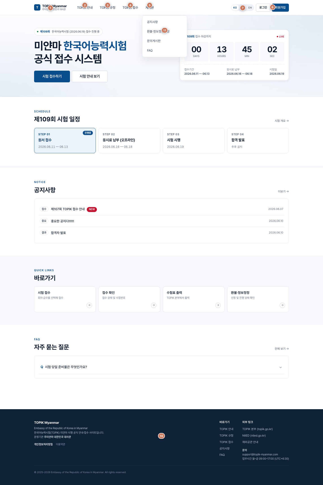
모든 페이지는 같은 상단 메뉴(GNB), 하단 푸터, 모바일 하단 탭바를 사용합니다. 어느 화면에서든 메뉴 구성과 로그인 상태가 동일하게 보이므로, 한 번 익혀 두면 다른 페이지에서도 길을 잃지 않습니다.
사용 흐름 (시나리오)
- 페이지를 열면 상단 메뉴·하단 푸터·모바일 탭바가 자동으로 표시됩니다.
- 로그인한 상태라면 오른쪽에 내 이름과 로그아웃 버튼이 보이고, 로그인하지 않았다면 로그인·회원가입 버튼이 보입니다. 이름을 클릭하면 마이페이지(접수 확인) 로 이동합니다.
- 시험 접수·접수 확인·환불·정정·문의처럼 로그인이 필요한 메뉴를 누르면 먼저 로그인 화면으로 이동합니다. 로그인 후 원래 가려던 메뉴로 자동 이동합니다.
- 모바일에서는 화면 아래 4개 탭(홈·접수·게시판·마이)으로 주요 메뉴에 빠르게 갈 수 있습니다. 더 많은 메뉴는 우측 햄버거(≡) 를 눌러 주세요.
요소별 상세
| 번호 | 요소 | 무엇 / 동작 / 결과 |
|---|---|---|
| 1 | 로고 | TOPIK Myanmar 로고. 클릭하면 홈으로 이동합니다. |
| 2 | TOPIK 안내 | 마우스를 올리거나 탭하면 시험 개요·소개·문항 구성·평가 기준 메뉴가 펼쳐집니다. 시험이 처음이면 여기서 시험 구조를 먼저 읽어 보세요. |
| 3 | TOPIK 규정 메뉴 | 드롭다운: 유의 사항·답안 작성 요령·응시료 규정·신분증 규정. 시험 당일 전에 유의 사항·신분증 규정을 꼭 확인하세요. |
| 4 | TOPIK 접수 메뉴 | 드롭다운: 접수 방법·시험 접수(로그인)·접수 확인(로그인)·수험표 출력. |
| 5 | 게시판 메뉴 | 드롭다운: 공지사항·환불·정보정정신청(로그인)·문의게시판(로그인)·FAQ. |
| 6 | 로그인·회원가입 | 로그인 전: 로그인·회원가입 버튼. 로그인 후: 내 이름(클릭 시 마이페이지) + 로그아웃. |
| 7 | 언어 전환 (KO/MY/EN) | 버튼을 누르면 바로 해당 언어로 화면이 바뀝니다. 정적 문구·동적 상태(로딩·오류)·서버 안내가 같은 언어로 표시됩니다. 새로고침 없이 적용됩니다. |
| 8 | 햄버거 메뉴 (모바일) | 우측 슬라이드 메뉴. 4대 메뉴 아코디언 + 로그인/마이 + 언어 전환. ESC·배경 클릭·닫기(✕) 로 닫힘, 열린 동안 본문 스크롤 잠금. |
| 9 | 하단 탭바 (모바일) | 홈·접수·게시판·마이 4탭. 현재 페이지에 맞춰 활성 탭 표시(예: 마이페이지·로그인은 "마이"). |
| 10 | 푸터 | 운영기관 안내, 바로가기, TOPIK·NIIED 등 외부 링크, 개인정보처리방침(볼드 강조), 이용약관·마케팅 링크, 문의 이메일, 업무시간(월–금 09:00–17:00, 미얀마 시간). |
| 11 | 로그인 필요 페이지 | 시험 접수·접수 확인·환불·정정·문의는 로그인 후 이용합니다. |
TIP: PC에서는 상단 메뉴, 스마트폰에서는 하단 탭과 햄버거 메뉴를 함께 쓰면 편합니다. 접수·마이페이지는 모바일 「마이」 탭에서도 바로 갈 수 있습니다.
메인 홈
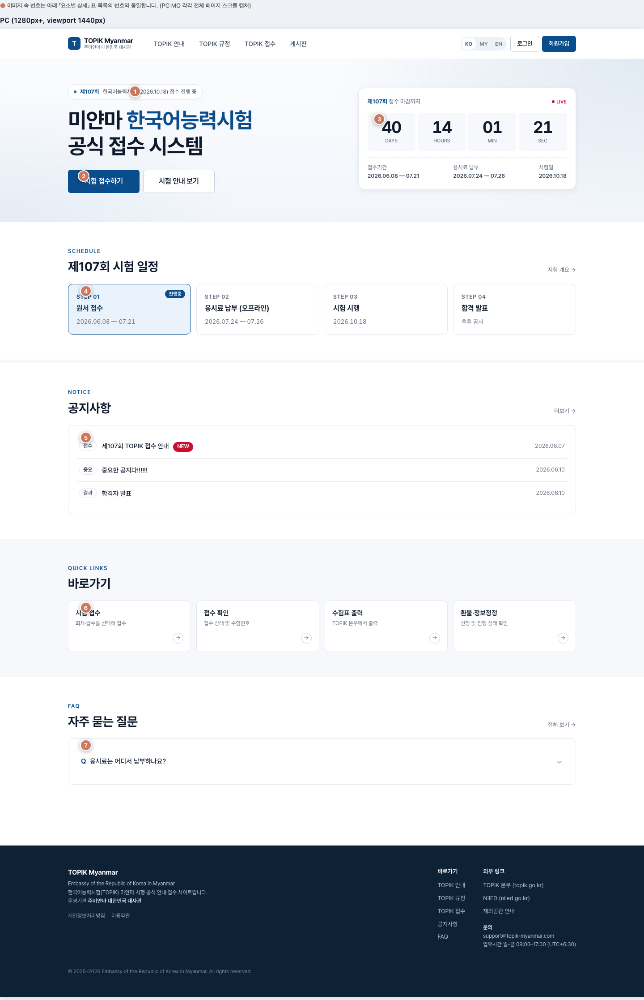
사이트 첫 화면입니다. 지금 몇 회차가 접수 중인지, 마감까지 얼마나 남았는지, 시험·합격 발표 일정, 최신 공지, 자주 묻는 질문을 한곳에서 확인할 수 있습니다. 접수 전에 여기서 일정과 마감을 꼭 확인하세요.
요소별 상세
- 1) 회차 배지 — 현재/다음 회차와 시험일을 표시합니다. 상태에 따라 모양이 바뀝니다: 접수 전 = "제N회 …(시험일)", 접수 중 = "… 접수 진행 중"(초록 점 깜빡임), 마감 = "접수 마감"(회색). 접수 중인 회차가 우선 표시되고, 없으면 가장 가까운 예정 회차가 표시됩니다.
- 2) 주요 버튼 — 시험 접수하기(로그인 필요), 시험 안내 보기. PC는 가로, 모바일은 세로로 배치됩니다. 아직 가입하지 않았다면 회원가입 후 접수하세요.
- 3) D-Day 카운트다운 — 접수 마감 시각까지 남은 일·시·분·초를 1초마다 갱신합니다. 0이 되면 "접수가 마감되었습니다 + 다음 회차 일정 보기" 안내로 자동 전환됩니다. 마감 직전에는 서버 부하로 지연될 수 있으니 여유 있게 접수하는 것을 권장합니다.
- 4) 일정 타임라인 — 4단계 카드: 원서 접수 → 응시료 납부(오프라인) → 시험 시행 → 합격 발표(추후 공지). 현재 진행 중 단계는 진행중, 지난 단계는 종료 배지로 표시됩니다.
- 5) 공지 미리보기 — 최신 공지 최대 5건. 각 행 = 카테고리 배지 + 제목(고정글은 NEW) + 날짜. 행을 클릭하면 공지 상세로 이동합니다. 중요·접수 공지는 반드시 읽어 보세요.
- 6) 바로가기 카드 — 시험 접수 / 접수 확인 / 수험표 출력 / 환불·정보정정. 자주 쓰는 메뉴로 빠르게 이동합니다.
- 7) FAQ 아코디언 — FAQ 상위 3건 요약. 질문 클릭 시 답변 펼침. 더 보려면 FAQ 메뉴로 이동하세요.
TIP: 홈의 D-Day는 접수 마감 기준입니다. 시험 당일까지 남은 시간과는 다릅니다. 접수 후에는 접수 확인(마이페이지)에서 사진 심사·수납 진행 상황을 확인하세요.
TOPIK 안내 · 시험 개요
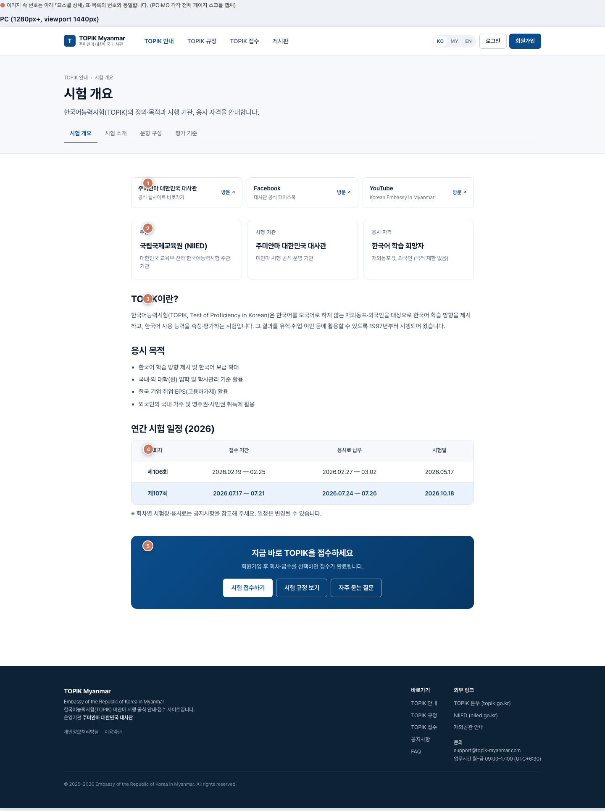
TOPIK 시험의 전체 그림을 소개하는 페이지입니다. 시험이 무엇인지, 누가 볼 수 있는지, 미얀마에서 언제 시험이 열리는지 확인할 수 있습니다. 처음 TOPIK을 준비하시는 분은 이 페이지와 시험 소개를 함께 읽어 보세요.
| 번호 | 요소 | 무엇 / 동작 |
|---|---|---|
| 1 | 외부 링크 3종 | 주미얀마 대한민국 대사관·Facebook·YouTube (새 탭). 공식 소식·안내 영상을 볼 수 있습니다. |
| 2 | 핵심 요약 카드 | 주관(국립국제교육원 NIIED) / 시행 기관(주미얀마 대한민국 대사관) / 응시 자격(국적 제한 없음). |
| 3 | 본문 | "TOPIK이란?"(1997년~ 시행 목적), 응시 목적 4가지(유학·취업·이민·자격 확인 등). |
| 4 | 연간 시험 일정 표 | 등록된 시험 회차 일정이 표로 표시됩니다. 현재 접수 중인 회차는 표에서 강조 표시됩니다. 시각은 미얀마(UTC+6:30) 기준입니다. |
| 5 | CTA 블록 | 시험 접수하기 / 시험 규정 보기 / 자주 묻는 질문. 접수 전 규정·FAQ를 먼저 보면 실수를 줄일 수 있습니다. |
TIP: 일정 표의 날짜는 변경될 수 있습니다. 최종 일정은 공지사항과 홈 화면 회차 정보를 함께 확인하세요.
TOPIK 안내 · 시험 소개
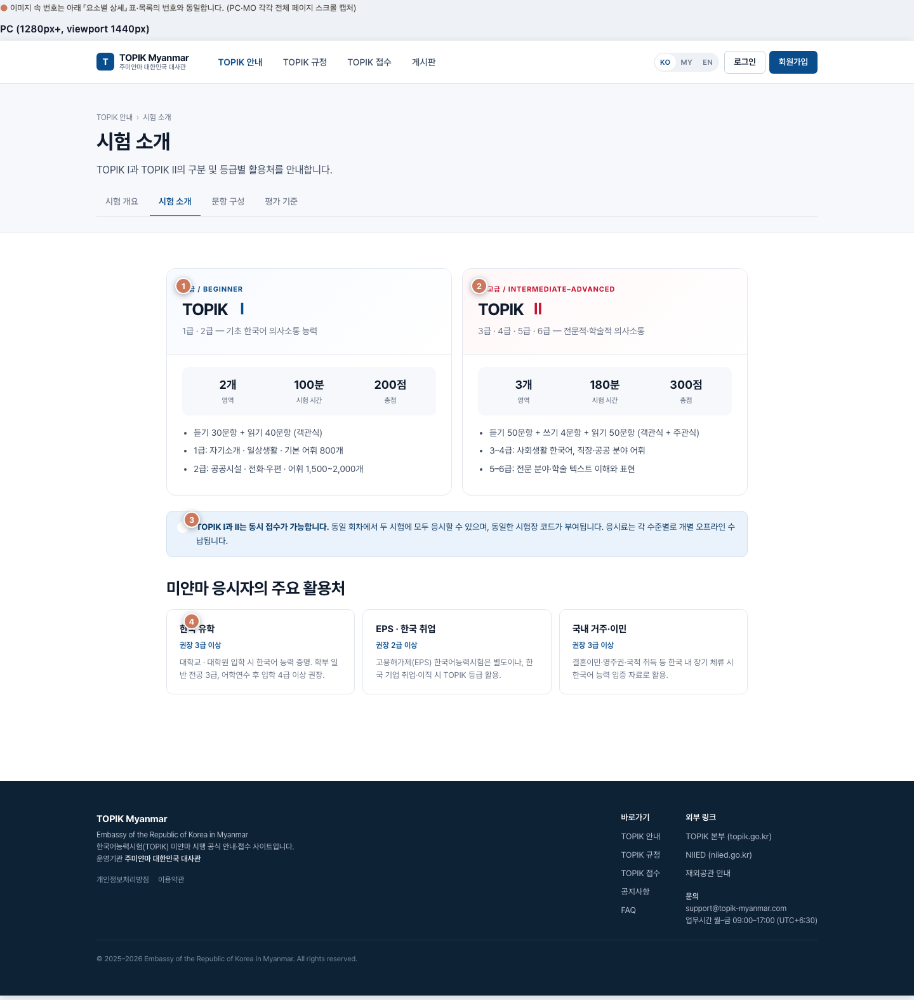
TOPIK Ⅰ과 Ⅱ의 차이, 등급별 활용처를 카드로 설명하는 안내 페이지입니다. "어느 급수를 접수해야 할까?" 고민될 때 참고하세요. Ⅰ·Ⅱ 동시 접수도 가능합니다(응시료는 급수별로 각각 납부).
| 번호 | 요소 | 내용 |
|---|---|---|
| 1 | TOPIK Ⅰ 카드 | 초급(1·2급) · 2개 영역 · 100분 · 200점. 듣기 30 + 읽기 40(객관식). 급수별 어휘 안내. 한국어 기초~초급 학습자·EPS 등에 적합. |
| 2 | TOPIK Ⅱ 카드 | 중·고급(3~6급) · 3개 영역 · 180분 · 300점. 듣기 50 + 쓰기 4 + 읽기 50(객관식+주관식). 유학·전문직 등에 많이 사용. |
| 3 | 동시 접수 안내 콜아웃 | Ⅰ·Ⅱ 동시 접수 가능, 동일 시험장 코드, 응시료는 수준별 개별 오프라인 수납. 같은 날 두 시험을 보려면 접수 시 둘 다 선택하세요. |
| 4 | 활용처 카드 3종 | 한국 유학(권장 3급+) / EPS·취업(권장 2급+) / 거주·이민(권장 3급+). 목적에 맞는 급수를 선택하는 참고 자료입니다. |
TIP: 목표 기관(대학·고용주)에서 요구하는 급수를 먼저 확인한 뒤 접수하세요. 급수를 잘못 선택해도 접수 기간 중 수납 전까지는 마이페이지에서 취소할 수 있습니다.
TOPIK 안내 · 문항 구성

시험 영역별 문항 수·배점·시간을 정리한 표 페이지입니다. 시험 당일 시간 배분을 계획할 때 참고하세요. TOPIK Ⅱ는 쓰기(주관식) 가 포함되어 Ⅰ보다 시간·난이도가 높습니다.
| 시험 | 영역 (유형) | 문항 | 배점 | 시간 |
|---|---|---|---|---|
| TOPIK Ⅰ | 듣기 (객관식) | 30 | 100 | 40분 |
| 읽기 (객관식) | 40 | 100 | 60분 | |
| 총계 | 70 | 200 | 100분 | |
| TOPIK Ⅱ | 듣기 (객관식) | 50 | 100 | 110분(듣기+쓰기) |
| 쓰기 (주관식) | 4 | 100 | ||
| 읽기 (객관식) | 50 | 100 | 70분 | |
| 총계 | 104 | 300 | 180분 |
요소별 상세
| 번호 | 블록 | 핵심 내용 |
|---|---|---|
| 1 | TOPIK Ⅰ 문항 표 | 듣기 30문항(40분)·읽기 40문항(60분), 총 70문항·200점·100분. 헤더에 급수·총 문항·총점·시간 요약. |
| 2 | TOPIK Ⅱ 문항 표 | 듣기 50·쓰기 4·읽기 50문항, 총 104문항·300점·180분(듣기+쓰기 110분, 읽기 70분). |
| 3 | 쓰기 안내 콜아웃 | TOPIK Ⅱ 쓰기 = 단문 완성형 2 + 작문형 2, 응시자 본인 손으로 답안지에 직접 작성. 연필·볼펜 사용 불가. 모범 답안·채점 기준은 topik.go.kr에서 확인. |
TIP: Ⅱ급 응시 시 쓰기 연습을 미리 해 두세요. OMR(객관식)만 연습하면 쓰기 시간이 부족할 수 있습니다.
TOPIK 안내 · 평가 기준
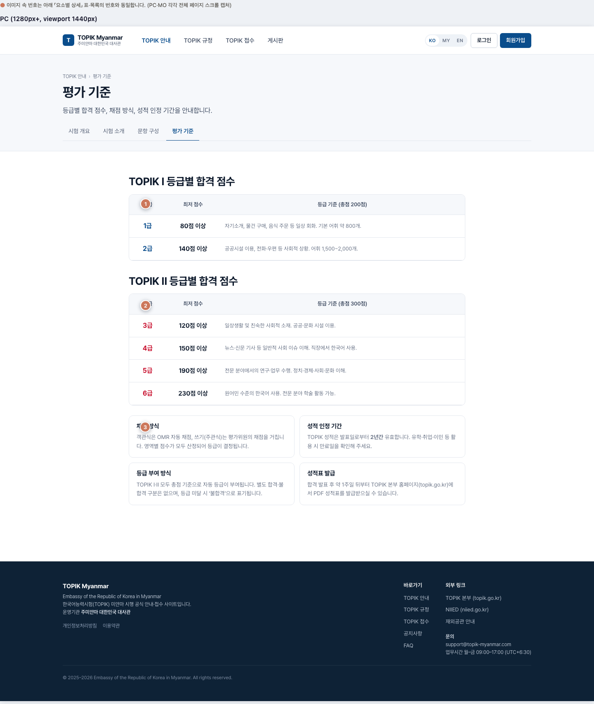
등급별 합격 점수와 채점·성적 인정 방식을 안내하는 페이지입니다. "몇 점 이상이면 몇 급?"을 확인할 수 있습니다. 실제 합격 여부는 총점이 해당 급수 최저 점수 이상일 때 해당 급수가 부여됩니다(영역별 최저 점수는 별도 규정이 없을 수 있음 — 최종 기준은 공식 안내 참고).
| 시험 | 등급 | 최저 점수 |
|---|---|---|
| TOPIK Ⅰ (200점) | 1급 / 2급 | 80점 이상 / 140점 이상 |
| TOPIK Ⅱ (300점) | 3급 / 4급 / 5급 / 6급 | 120 / 150 / 190 / 230점 이상 |
요소별 상세
| 번호 | 블록 | 핵심 내용 |
|---|---|---|
| 1 | TOPIK Ⅰ 등급표 | 1급(80점+)·2급(140점+) 합격 기준. 등급별 최저 점수·설명·점수 막대 시각화. |
| 2 | TOPIK Ⅱ 등급표 | 3~6급(120/150/190/230점+) 합격 기준. Ⅰ과 동일 형식, 색상만 Ⅱ(적색) 테마. |
| 3 | 추가 정보 카드 4종 | 채점 방식(OMR 자동·쓰기 평가위원) · 성적 인정 기간(2년) · 등급 부여(총점 기준·미달 시 불합격) · 성적표 발급(topik.go.kr PDF). 성적표는 본부 사이트에서 직접 출력·다운로드합니다. |
TIP: 성적은 2년간 인정됩니다. 유학·비자 일정에 맞춰 시험 시기를 계획하세요.
TOPIK 규정 · 유의 사항
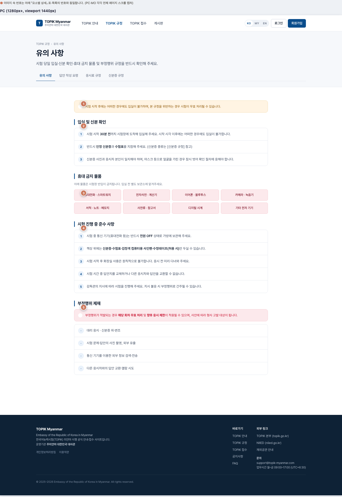
시험 당일 지켜야 할 규정을 정리한 페이지입니다. 입실 시간·금지 물품·부정행위 제재 등을 시험 전날 꼭 읽어 보세요. 규정 위반 시 해당 회차 무효 또는 향후 응시 제한이 될 수 있습니다.
| 번호 | 블록 | 핵심 내용 |
|---|---|---|
| 1 | 상단 경고 | 시험 시작 후 입실 불가, 규정 위반 시 무효 처리 가능. |
| 2 | 입실 및 신분 확인 | 시작 30분 전 도착, 인정 신분증+수험표 지참, 사진·본인 일치 확인(마스크 잠시 벗기). |
| 3 | 휴대 금지 물품 | 휴대전화·스마트워치, 전자사전·계산기, 이어폰·블루투스, 카메라·녹음기, 서적·노트·메모지, 사전류·참고서, 디지털 시계, 기타 전자기기. |
| 4 | 진행 중 준수 사항 | 통신기기 전원 OFF·가방 보관, 책상 위 허용물(신분증·수험표·검정 사인펜·수정테이프), 화장실 사용 불가 원칙, 답안 교체·교환 금지, 감독관 지시 준수. |
| 5 | 부정행위 제재 | 회차 무효·향후 응시 제한·형사 고발 가능. (대리응시·신분증 위변조·문제/답안 촬영 유출·외부 정보 검색·답안 교환) |
TIP: 시험장에는 휴대전화·스마트워치를 가져가지 마세요. 입실 전 전원 OFF 후 지정 장소에 보관해야 합니다. 신분증 규정과 수험표도 함께 준비하세요.
TOPIK 규정 · 답안 작성 요령
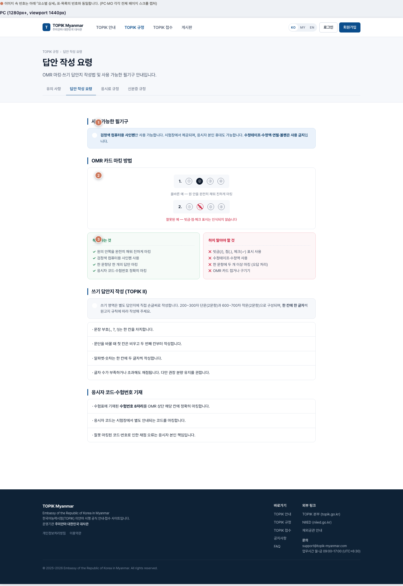
OMR(객관식) 마킹과 쓰기 답안 작성법, 사용 가능한 필기구를 안내합니다. 시험 전에 OMR 연습을 해 두면 당일 실수를 줄일 수 있습니다.
| 번호 | 블록 | 핵심 내용 |
|---|---|---|
| 1 | 사용 가능한 필기구 | 검정색 컴퓨터용 사인펜만 사용(시험장 제공·본인 휴대 가능). 수정테이프·수정액·연필·볼펜 금지. |
| 2 | OMR 카드 마킹 | 올바른 예(원 안을 완전히 진하게) vs 잘못된 예(빗금·점·반칸) 일러스트로 비교. |
| 3 | 해야 할 것 / 하지 말 것 | Do/Don't 2열 표로 정답 마킹·수정 테이프로 OMR 정정·답안지 훼손 금지 등 안내. 답을 바꿀 때는 기존 마킹을 지우지 말고 수정테이프로 덮은 뒤 다시 마킹하세요. |
TIP: 시험장에서 검정 컴퓨터용 사인펜과 수정테이프를 제공하지만, 본인 것을 가져가도 됩니다. 연필·볼펜·수정액은 사용할 수 없습니다.
TOPIK 규정 · 응시료 규정
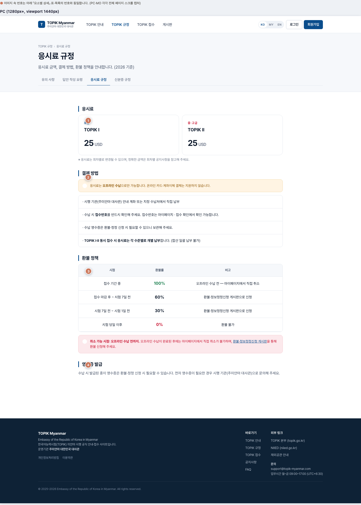
응시료 금액·납부 방법·환불률을 안내하는 페이지입니다(2026 기준). 이 사이트에서는 온라인 결제가 되지 않으므로, 접수 후 지정 수납처에서 직접 납부해야 합니다. Ⅰ·Ⅱ 동시 접수 시 급수마다 각각 납부합니다.
- 1) 응시료: TOPIK Ⅰ = $25 USD, TOPIK Ⅱ = $25 USD. (회차별로 변경될 수 있음 — 접수 화면·공지에 표시된 금액이 최종 기준입니다.)
- 2) 결제 방법: 오프라인 수납만 (온라인 카드·계좌이체 미지원). 지정 계좌/수납처에서 직접 납부, 수납 시 접수번호를 꼭 확인·기록, 영수증 보관, Ⅰ·Ⅱ 동시 접수 시 수준별 개별 납부.
- 3) 환불 정책 표:
| 시점 | 환불률 | 비고 |
|---|---|---|
| 접수 기간 중 | 100% | 오프라인 수납 전 — 마이페이지에서 직접 취소 |
| 접수 마감 후 ~ 시험 7일 전 | 60% | 환불·정보정정신청 게시판으로 신청 |
| 시험 7일 전 ~ 1일 전 | 30% | 환불·정보정정신청 게시판으로 신청 |
| 시험 당일 이후 | 0% | 환불 불가 |
- 4) 영수증 발급: 종이 영수증은 환불·정정 신청 시 필요할 수 있음. 전자 영수증은 시행 기관 문의.
중요: 오프라인 수납 전까지는 마이페이지에서 직접 접수 취소(100% 환불 해당)가 가능합니다. 수납 후에는 마이페이지 취소가 막히므로, 환불이 필요하면 환불·정보정정신청 게시판으로 신청하세요. 환불률은 아래 표와 공지를 함께 확인하세요.
TOPIK 규정 · 신분증 규정
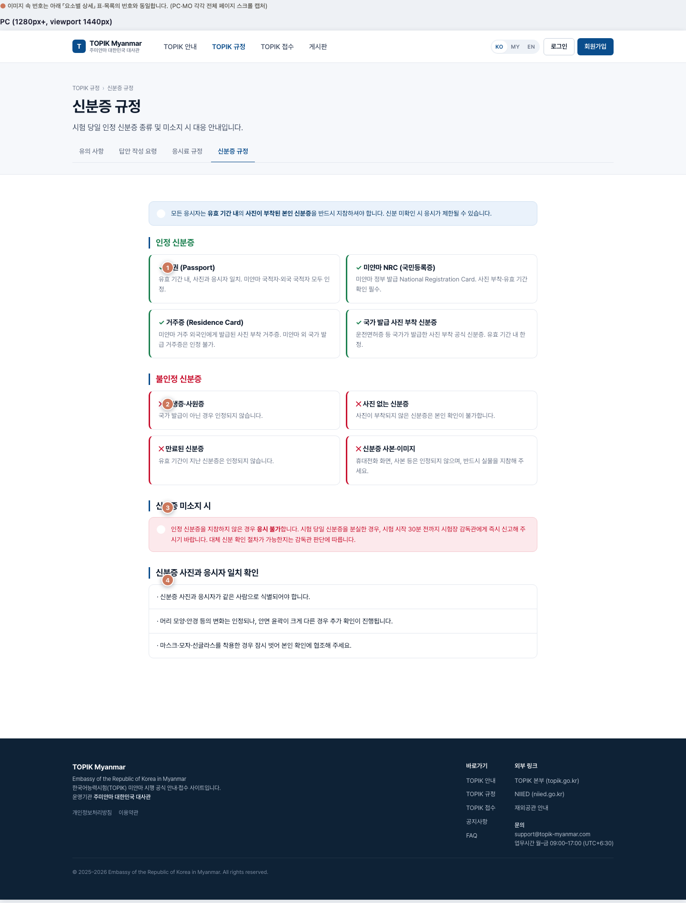
시험 당일 반드시 지참해야 하는 신분증 종류와, 인정되지 않는 증명, 분실 시 대응 방법을 안내합니다. 신분증 없이는 응시할 수 없습니다. 수험표와 함께 준비하세요.
| 번호 | 블록 | 핵심 내용 |
|---|---|---|
| 1 | 인정 신분증 | 여권·미얀마 NRC·미얀마 발급 거주증·국가 발급 사진 부착 신분증(운전면허증 등). 유효기간 내 + 사진 부착 + 본인 일치 필수. |
| 2 | 불인정 신분증 | 학생증·사원증 / 사진 없는 신분증 / 만료된 신분증 / 사본·휴대폰 화면 이미지. |
| 3 | 신분증 미소지 시 | 인정 신분증 없으면 응시 불가. 당일 분실 시 시작 30분 전까지 감독관에 즉시 신고, 대체 확인 가능 여부는 감독관 판단. |
| 4 | 사진 일치 확인 | 신분증 사진과 응시자 동일인 식별 필요. 머리·안경 변화는 인정, 안면 윤곽이 크게 다르면 추가 확인. 마스크·모자·선글라스는 확인 시 잠시 벗기. |
TIP: 접수·가입 시 올린 증명사진과 당일 본모습이 너무 다르면 사진 심사·당일 확인에서 지연될 수 있습니다. 내정보 수정에서 최근 사진으로 미리 바꿔 두세요.
TOPIK 접수 · 접수 방법
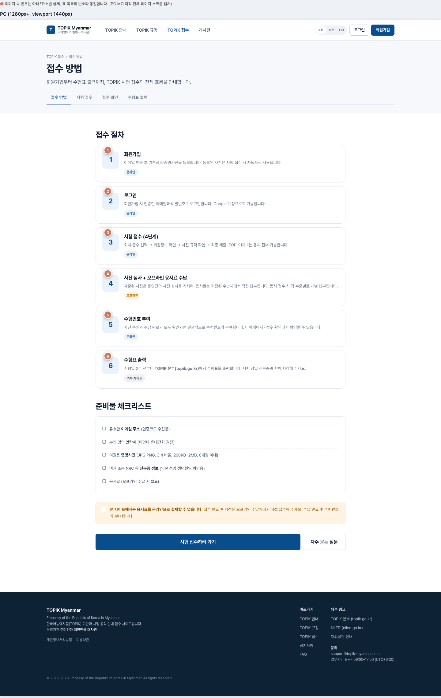
회원가입부터 수험표 출력까지 전체 흐름을 6단계로 설명하는 안내 페이지입니다. 처음 접수하시는 분은 이 페이지를 처음부터 끝까지 한 번 읽은 뒤 시험 접수로 이동하세요.
| 번호 | 단계 | 채널 | 내용 |
|---|---|---|---|
| 1 | 회원가입 | 온라인 | 이메일 인증 + 기본정보·증명사진 등록 (사진은 접수 시 자동 사용). |
| 2 | 로그인 | 온라인 | 이메일+비밀번호 또는 Google 계정. |
| 3 | 시험 접수 (4단계) | 온라인 | 회차·급수 → 회원정보 확인 → 사진 규격 확인 → 최종 제출. Ⅰ·Ⅱ 동시 가능. |
| 4 | 사진 심사 + 응시료 수납 | 오프라인 | 운영진 사진 심사 + 지정 수납처 직접 납부 (동시 접수 시 수준별 개별). |
| 5 | 수험번호 부여 | 온라인 | 사진 승인 + 수납 완료 확인 시 일괄 부여 → 마이페이지에서 확인. |
| 6 | 수험표 출력 | 외부 | 시험 2주 전부터 topik.go.kr에서 출력, 당일 신분증과 지참. |
- 준비물 체크리스트: 유효 이메일 / 본인 연락처(미얀마 휴대전화 권장) / 여권용 증명사진(JPG·PNG, 3:4, 200KB~2MB, 6개월 이내) / 신분증 정보(여권·NRC) / 응시료(오프라인, USD 현금 등 — 수납처 안내는 공지 참고).
- 경고 콜아웃: 본 사이트는 응시료 온라인 결제 불가 → 온라인 접수 완료 후 오프라인 수납 → 운영진 확인 → 수험번호 부여 순서입니다.
TIP: 4단계(사진 심사 + 수납)는 운영진·수납처에서 진행됩니다. 접수 직후 마이페이지에 「사진 심사 대기」「수납 대기」 가 보이면 정상입니다. 조급해 문의하기 전에 접수 확인에서 진행 칸을 확인하세요.
TOPIK 접수 · 시험 접수 (4단계)
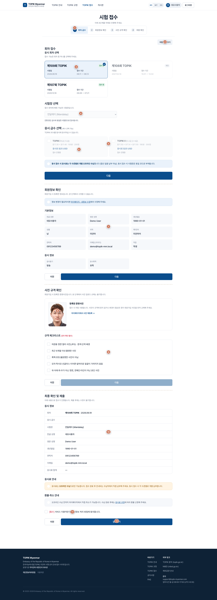
로그인 필수 — 이용 전 로그인해 주세요.
4단계로 나뉜 온라인 시험 접수 화면입니다. 상단 단계 표시에서 완료한 단계를 클릭하거나 다음·이전 버튼으로 이동합니다. 저장 후 나가기로 중간 저장(30일)도 가능합니다.
사용 흐름 (시나리오)
- STEP1 회차·급수 — 접수 중인 회차만 선택 → 시험장 → TOPIK Ⅰ/Ⅱ(복수 가능) → 다음.
- STEP2 회원정보 확인 — 가입 정보 읽기 전용. 수정은 내정보 수정에서 접수 전에.
- STEP3 사진 규격 확인 — 증명사진 + 5개 체크 전부해야 다음 활성. 사진 교체는 이 단계에서 불가.
- STEP4 최종 확인 — 요약 + 약관 동의 → 접수하기 → 접수확인으로 마이페이지.
- 저장 후 나가기 — 임시저장. 다음 접속 시 이어쓰기 여부를 묻습니다.
STEP별 핵심 동작
| 단계 | 주요 동작 |
|---|---|
| 1 | 회차 선택 → 시험장 선택 → TOPIK Ⅰ·Ⅱ 급수(복수) 선택 → 다음 |
| 2 | 가입 정보 읽기 전용 표시(수정 불가, 내정보 수정 링크 제공) |
| 3 | 증명사진 미리보기 + 5항목 규격 체크 전부 선택 시 다음 활성 |
| 4 | 접수 요약 확인 + 약관 동의 → 접수하기 (증명사진 없으면 제출 불가) |
요소별 상세
- 1) 단계 표시 — ①회차·급수 ②회원정보 확인 ③사진 규격 확인 ④최종 확인. 완료 단계 클릭 시 해당 단계로 이동(모바일은 활성 탭을 화면 중앙으로 스크롤).
- 2) 저장 후 나가기 — 입력 중인 내용을 임시 저장하고 마이페이지로 나갈 수 있습니다. 저장된 내용은 30일간 보관되며, 다음에 접수 화면에 들어오면 이어서 작성할지 묻습니다.
- 3) 회차 목록 — 접수 중·예정 회차만 카드로 노출. 카드에 제N회/제목, 상태 배지(접수 중/접수 마감/예정), 시험일, 접수 기간. 접수 중이 아닌 회차는 선택 불가. 한 번에 하나만 선택.
- 4) 시험장 — 시험장 목록 드롭다운. 시험장이 1개면 자동 선택. 재접수이거나 같은 회차에 진행 중 급수가 있으면 기존 시험장으로 고정(변경 불가 + 안내 문구).
- 5) 급수 선택 — TOPIK Ⅰ·Ⅱ 복수 선택. 이미 진행 중인 급수는 선택 불가 + 사유 안내(사진 심사중/수납 대기/접수 진행중). 재접수에서는 반려·취소된 급수만 다시 선택 가능.
- 6) 응시료 표시 — 선택 회차·급수별 응시료. Ⅰ·Ⅱ 동시 선택 시 최종 확인 단계 합계에 반영.
- 7) 회원정보 (STEP2) — 한글·영문 성명, 생년월일, 성별, 국적, 제1언어, 연락처, 이메일, 직업·응시동기·응시목적. 이 화면에서는 수정 불가 → 내정보 수정 이용.
- 8) 사진 미리보기 (STEP3) — 가입 시 등록한 증명사진 표시. 이 단계에서 교체 불가 → 내정보 수정에서 변경.
- 9) 규격 체크리스트 (STEP3) — 5항목: 여권용 정면 컬러(JPG)·흰색 배경 / 최근 6개월 이내 / 흑백·흐릿 아님 / 모자·선글라스·이어폰·앞머리로 얼굴 안 가림 / 정면·본인. 전부 체크해야 다음 활성.
- 10) 최종 요약 (STEP4) — 회차·시험일, 선택 급수(2개면 "동시 접수"), 시험장, 응시자 정보, 응시료 합계. 응시료·환불 안내 함께 표시.
- 11) 약관 동의 — [필수] 체크. 미체크 시 제출 불가(알림).
- 12) 제출 — 접수하기 → 완료 안내 → 접수확인 누르면 마이페이지 이동.
자주 보는 안내 메시지
| 상황 | 동작 / 메시지 |
|---|---|
| 급수 미선택 | "응시 급수를 1개 이상 선택해 주세요." |
| 사진 체크리스트 미완료 | STEP3에서 다음 비활성 |
| 접수 불가 회차 | "접수 가능한 회차가 아닙니다." |
| 동일 회차·급수 중복 | "이미 …접수 진행 중입니다." |
| 잠긴 시험장 위반 | "다른 급수가 진행 중일 때는 기존 시험장으로만 접수할 수 있습니다." |
| 잘못된 시험장 | "선택한 시험장을 사용할 수 없습니다." |
| 로그인 만료 | "로그인이 만료되었습니다." → 로그인 화면으로 이동 |
재접수 진입
마이페이지에서 재접수 클릭 시 접수 화면으로 이동합니다. 재접수 모드는 임시저장 복원을 건너뛰고, 반려·취소된 급수만 다시 선택해 제출합니다.
TIP: STEP3 체크리스트 5개를 한 번에 체크하지 않으면 다음 버튼이 회색으로 비활성입니다. 사진 규격을 다시 확인한 뒤 모두 체크해 주세요.
TOPIK 접수 · 접수 확인
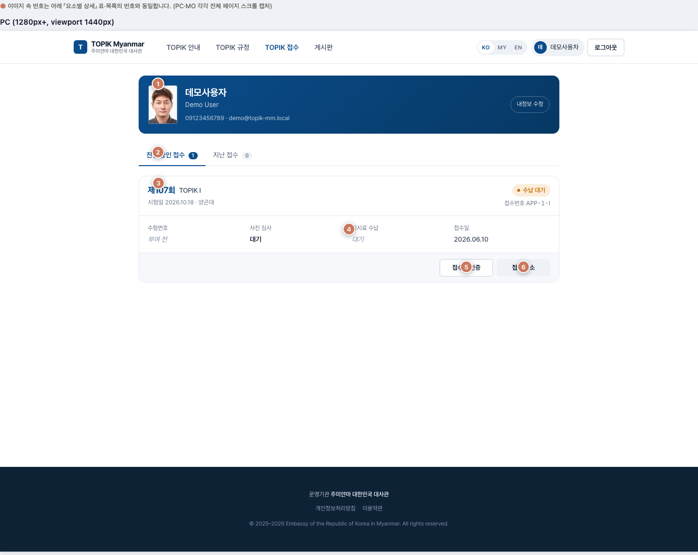
로그인 필수.
마이페이지(접수 확인) 는 접수 후 가장 자주 방문하게 되는 화면입니다. 내 프로필과 회차·급수별 접수 카드를 한곳에서 볼 수 있으며, 사진 심사·응시료 수납·수험번호 진행 상황을 4칸 진행 현황으로 확인합니다. 스크린샷은 PC + MO 전체 페이지를 나란히 보여 주며, ● 번호는 아래 표와 같습니다.
동일 회차에 TOPIK Ⅰ·Ⅱ를 함께 접수한 경우(예: 제107회) 급수별 카드가 각각 표시됩니다. Ⅰ·Ⅱ는 사진 심사·수납·수험번호도 급수별로 따로 진행됩니다.
사용 흐름 (시나리오)
- 로그인 후 접수 확인(또는 상단 내 이름 클릭)에 들어오면 상단 프로필 카드와 진행 중인 접수 / 지난 접수 탭이 표시됩니다.
- 진행 중인 접수 탭에서 회차·급수·상태 배지·4칸 진행 현황(수험번호·사진 심사·응시료 수납·접수일)을 확인합니다. 주황색으로 강조된 칸이 지금 해야 할 다음 단계입니다(예: 수납 대기).
- 접수 확인증을 누르면 인쇄용 확인증 창이 열립니다. 수납 전·미반려 건은 접수 취소도 이용할 수 있습니다.
- 사진 반려 시 사유보기로 이유 확인 → 내정보 수정에서 사진 교체 → 사진 재등록 또는 자동 재심사 대기.
화면 구성 (스크린샷 예시)
| 번호 | 요소 | 스크린샷에서 보이는 내용 / 동작 |
|---|---|---|
| 1 | 프로필 카드 | 증명사진, 한글·영문 이름, 연락처·이메일. 우측 내정보 수정 링크. |
| 2 | 탭 | 진행 중인 접수 / 지난 접수 — 탭 옆 숫자는 해당 목록 건수. 취소·완료 건은 지난 접수로 이동. |
| 3 | 접수 카드 (급수별) | 예: 제107회 TOPIK Ⅰ · 배지 접수 완료 · 시험일·시험장·접수번호. Ⅱ급은 별도 카드. |
| 4 | 4칸 진행 현황 | 수험번호 부여 전 · 사진 심사 대기 · 응시료 수납 대기(주황 강조) · 접수일. |
| 5 | 접수 확인증 | 카드 하단 버튼 → 인쇄용 확인증(회차·접수번호·급수·응시료·접수일·응시자 등). |
| 6 | 접수 취소 | 수납 전·미반려 건만 노출. 확인 후 해당 급수 접수 취소. |
상태 배지 의미
| 배지 | 의미 |
|---|---|
| 접수 완료 | 제출됨, 사진 심사 대기 |
| 사진 심사중 | 운영진 사진 심사 진행 |
| 수납 대기 | 사진 승인 후 응시료 미납 |
| 수납 완료 | 납부 완료, 수험번호 부여 대기 |
| 수험번호 부여 | 수험번호 부여(공개일 전까지 숨김 가능) |
| 사진 반려 | 사진 재등록 필요 |
| 반려 | 접수 반려 → 재접수 필요 |
| 접수 취소 | 취소됨(지난 접수 탭) |
기타 요소 (카드·안내 창)
- 반려 사유 — 사진/접수 반려 카드의 사유보기 → 반려 사유 확인.
- 재접수 — 반려 건에 표시 → 접수 화면으로 이동해 다시 접수.
액션 노출 규칙
| 상태 | 노출 버튼 |
|---|---|
| 접수 완료·사진 심사중·수납 대기 | 접수 확인증 · 접수 취소 |
| 수납 완료 | 접수 확인증 |
| 수험번호 부여 | 접수 확인증 · 수험표 출력 |
| 사진 반려 | 사진 재등록 · 사유보기 |
| 반려 | 재접수 · 사유보기 |
- 취소 불가: 이미 취소되었거나 수납이 완료된 접수는 마이페이지에서 직접 취소할 수 없습니다. 환불이 필요하면 환불·정보정정신청 게시판을 이용하세요(환불률은 응시료 규정 참고).
- 한 회차에 여러 급수가 있을 때 급수 단위 취소가 가능하며, 모든 급수가 취소되면 접수 건 전체가 취소 처리됩니다.
- 수험번호는 운영진이 부여한 뒤, 공개 일시 이전에는 마이페이지에 「부여 전」 또는 숨김으로 보일 수 있습니다. 공개 후에도 안 보이면 문의게시판으로 연락하세요.
TIP: 접수 후 매일 한 번 마이페이지를 확인하면 사진 반려·수납 안내를 놓치지 않습니다. 수납은 지정 수납처에서 접수번호를 알려 주며 납부합니다.
TOPIK 접수 · 수험표 출력
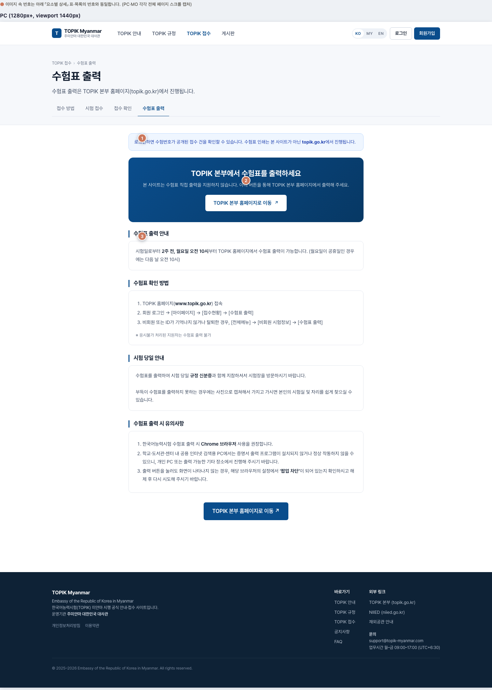
로그인 없이도 안내 내용은 볼 수 있습니다. 본인 수험번호 확인·출력 안내는 로그인 후 가능합니다.
수험표(입장권) 는 이 사이트가 아니라 topik.go.kr(TOPIK 본부 공식 사이트)에서 출력합니다. 아래 순서를 따라 주세요.
출력까지의 흐름
- 접수 확인(마이페이지)에서 수험번호 부여·공개 여부 확인
- 수험번호가 표시된 카드의 TOPIK 본부에서 수험표 출력 버튼 클릭 → 본부 수험표 출력 페이지로 이동
- 본부 사이트 안내에 따라 수험표 출력(보통 시험 2주 전부터)
- 시험 당일 수험표 + 신분증 지참
요소별 상세
- 1) 상태 영역 — 로그인·접수 상태에 따라 안내가 바뀝니다:
- 비로그인: "로그인하면 수험번호 공개 여부를 확인" 안내(로그인 링크).
- 수험번호 공개됨: 회차별 카드 + 급수별 수험번호 + TOPIK 본부에서 수험표 출력 버튼(→
https://www.topik.go.kr/TWMYPG/TWMYPG0030-001.do). - 부여됐으나 공개 전: "아직 공개일 전" 경고.
- 대상 없음/진행 중만 있음: 안내 + 접수/확인 링크.
- 2) TOPIK 본부 홈페이지로 이동 —
https://www.topik.go.kr(수험표 카드 버튼과 별도). - 3) 안내 블록 4종 — 출력 시점(시험 2주 전 월요일 10시~), 확인 방법(로그인→마이페이지→접수현황→수험표), 시험 당일(수험표+신분증), 출력 유의사항(Chrome 권장·팝업 차단 해제).
TIP: 수험표가 출력되지 않으면 브라우저 팝업 차단을 해제하고 다시 시도하세요. 수험번호가 아직 공개 전이면 본부 사이트에서도 조회되지 않을 수 있습니다.
게시판 · 공지사항
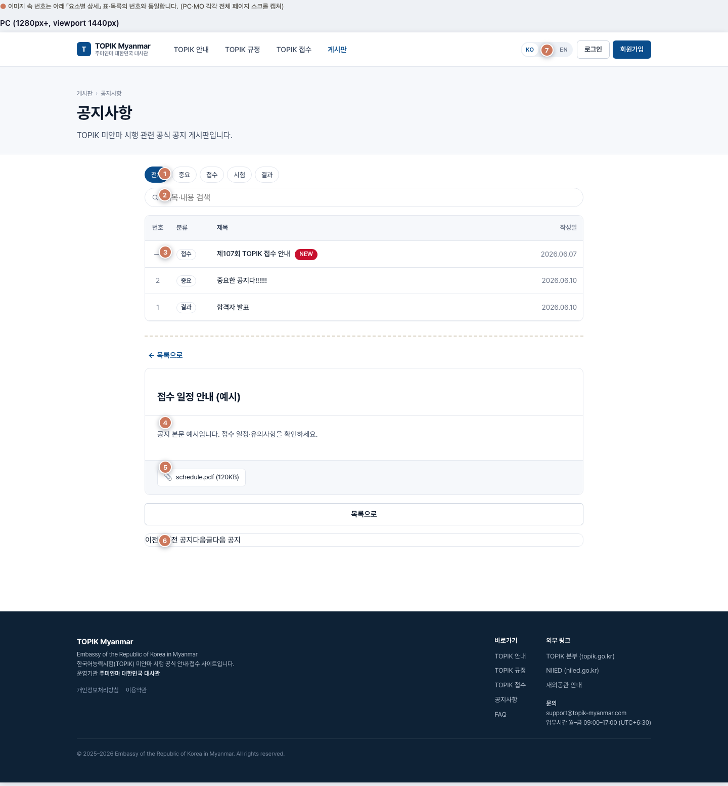
운영 기관의 공식 공지를 확인하는 게시판입니다. 접수 일정 변경·수납처·시험장 안내 등 중요·접수 분류 공지는 접수 전후에 꼭 확인하세요. 한 페이지에서 목록과 상세를 전환하며 읽을 수 있고, 공지 링크를 공유하면 해당 글 상세로 바로 열립니다.
화면 구성
| 화면 | 설명 |
|---|---|
| 목록 | 카테고리 필터 + 검색 + 공지 목록(번호·분류·제목·작성일) |
| 상세 | 제목·작성 정보·본문·첨부·이전글/다음글 |
요소별 상세
- 1) 카테고리 칩 — 전체 / 중요 / 접수 / 시험 / 결과. 카테고리를 누르면 해당 분류만 표시됩니다.
- 2) 검색 — 제목을 기준으로 검색합니다. 결과 없으면 "검색 조건에 맞는 공지가 없습니다." 표시.
- 3) 목록 — 고정 공지는 번호 대신 NEW 배지. 행 클릭 → 상세. 게시 기간·공개 상태에 맞는 공지만 표시.
- 4) 상세 본문 — 관리자가 작성한 내용. 외부 링크는 새 탭. 조회 시 조회수 증가. (스크린샷에서는 목록 아래에 상세 영역이 함께 펼쳐져 있습니다.)
- 5) 첨부 — 파일명·크기, 다운로드.
- 6) 이전글/다음글 — 목록과 같은 순서 기준. 클릭 시 해당 글 상세.
- 7) 언어 전환 — KO/MY/EN 변경 시 목록·상세를 해당 언어로 다시 불러옵니다. 번역이 없는 공지는 한국어가 표시될 수 있습니다.
TIP: 홈 화면 공지 미리보기에서 최신 5건만 볼 수 있습니다. 지난 공지는 이 메뉴 목록·검색으로 찾으세요.
게시판 · FAQ

자주 묻는 질문을 카테고리별로 모아 둔 페이지입니다. 접수·수납·수험표·사진 등 반복 질문은 문의 전에 여기서 먼저 검색해 보세요. 질문을 클릭하면 답변이 아코디언으로 펼쳐집니다.
| 번호 | 요소 | 동작 |
|---|---|---|
| 1 | 카테고리 칩 | 전체 / 계정 / 접수 / 시험 / 결과 / 기타. 카테고리를 누르면 해당 분류만 표시됩니다. |
| 2 | 검색 | 질문과 답변에서 검색합니다. 일치 항목은 자동으로 펼쳐집니다. |
| 3 | 아코디언 그룹 | 카테고리별 그룹 헤더(건수 배지) + 질문 클릭 시 답변 펼침. |
| 4 | 언어 전환 | KO/MY/EN 변경 시 해당 언어로 다시 불러옵니다. |
TIP: 검색창에 「수납」「사진」「수험번호」 등 키워드를 입력하면 관련 질문이 자동으로 펼쳐집니다.
게시판 · 문의게시판
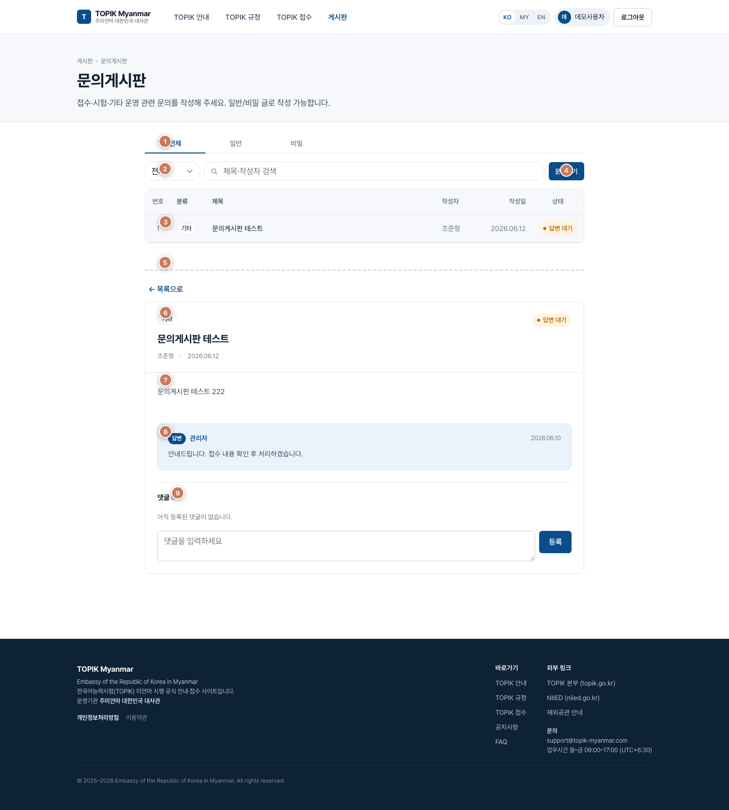
로그인 필수.
응시자가 운영진에게 1:1로 질문하는 게시판입니다. FAQ에서 답을 찾지 못했을 때 이용하세요. 한 페이지에서 목록, 글쓰기, 상세 보기를 전환합니다. 관리자 답변이 등록되면 상태가 답변 완료 등으로 바뀝니다.
사용 흐름 (비밀글 문의 시나리오)
- 문의하기 → 작성 화면. 카테고리·공개 범위 선택. 비밀을 고르면 비밀번호 입력칸(4자 이상).
- 제목(100자 이내)·내용(10자 이상)·첨부(jpg/png/pdf, 5MB 이하, 최대 3개) 입력 후 제출.
- 목록에서 내 비밀글은 자물쇠 아이콘. 본인이면 본문 열람. 타인 비밀글 클릭 시 "작성자·관리자만 열람" 안내.
입력 필드 (작성 화면)
| 필드 | 필수 | 형식·제약 | 예시 |
|---|---|---|---|
| 카테고리 | ● | 접수 / 시험 / 기타 | 접수 |
| 공개 범위 | ● | 일반(누구나) / 비밀(작성자·관리자만) | 비밀 |
| 비밀글 비밀번호 | 비밀 선택 시 ● | 4자 이상 | 1234 |
| 제목 | ● | 1~100자 | 응시료 수납 문의 |
| 내용 | ● | 10자 이상 | … |
| 첨부 | ○ | jpg/png/pdf, 5MB 이하, 최대 3개 | receipt.jpg |
게시글 상태
| 상태 | 표시 |
|---|---|
| 접수 | 접수 |
| 처리중 | 처리중 |
| 답변 대기 | 답변 대기 |
| 답변 완료 | 답변 완료 |
| 완료 | 완료 |
| 반려 | 반려 |
요소별 상세
| 번호 | 요소 | 설명 |
|---|---|---|
| 1 | 탭 | 전체 / 일반 / 비밀. 공개 범위별 목록 필터. |
| 2 | 카테고리·검색 | 카테고리(접수·시험·기타) + 제목·작성자 검색. |
| 3 | 목록 | 번호·분류·제목·작성자·작성일·상태. 행 클릭 시 상세로 전환. |
| 4 | 문의하기 | 작성 화면으로 이동. |
| 5 | 페이지 | 목록 페이지 이동(20건/페이지). |
| 6 | 상세 헤더 | 분류·상태·제목·작성자·작성일·비밀글 표시. |
| 7 | 본문·첨부 | 문의 내용·첨부 다운로드. |
| 8 | 관리자 답변 | 공식 답변 이력(최신순). |
| 9 | 댓글 | 댓글 목록·작성·답글. |
타인 비밀글은 "작성자·관리자만 열람" 안내가 표시됩니다. 관리자 답변 전에만 수정·삭제 가능하며, 수정 저장 시 비밀글 비밀번호(4자 이상)를 다시 입력해야 합니다.
검증·에러
| 상황 | 메시지 |
|---|---|
| 제목 길이 | "제목을 100자 이내로 입력해 주세요." |
| 내용 길이 | "내용을 10자 이상 입력해 주세요." |
| 비밀글 비번 | "비밀글 비밀번호를 4자 이상 입력해 주세요." |
| 수정 시 비밀번호 미입력 | 위와 동일(비밀글 수정·저장 시에도 적용) |
| 첨부 형식/크기 | "jpg, png, pdf 형식만…" / "파일 크기는 5MB 이하…" |
| 첨부 개수 | "첨부파일은 최대 3개까지 가능합니다." |
| 비로그인 | 로그인 화면으로 이동 |
TIP: 개인정보(여권번호 전체·계좌번호 등)는 비밀글로 작성하는 것을 권장합니다. 관리자 답변 후에는 본인 글도 수정·삭제할 수 없습니다 — 제출 전 내용을 꼼꼼히 확인하세요.
게시판 · 환불·정보정정
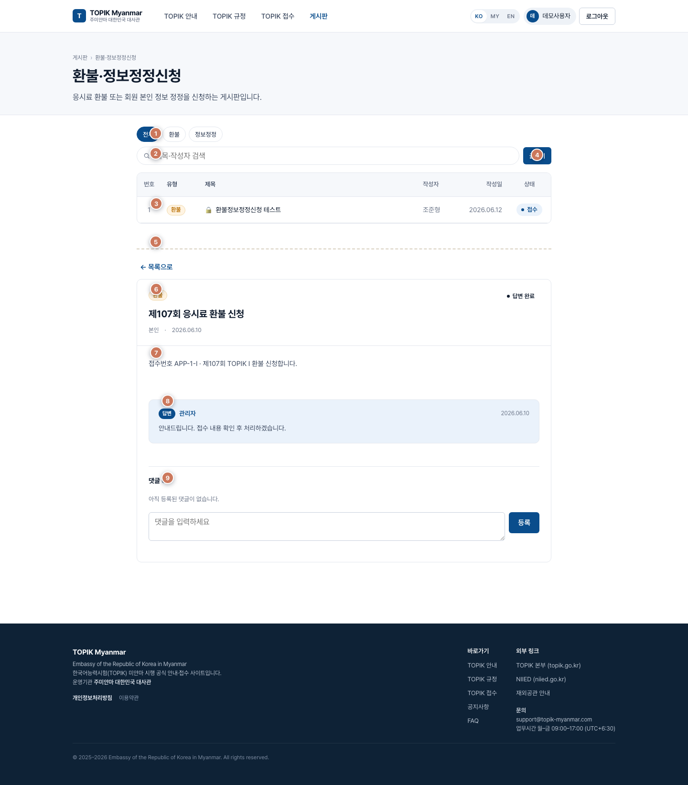
로그인 필수.
환불 또는 회원·접수 정보 정정을 신청하는 전용 게시판입니다. 문의게시판과 비슷하지만, 모든 글이 비밀글로 등록되며 유형(환불/정보정정) 을 반드시 선택합니다. 환불률·기한은 응시료 규정을 참고하세요.
사용 흐름 (시나리오)
- 글쓰기 → 유형(환불/정보정정) → 제목·내용 → 비밀번호(4자 이상) → 첨부(영수증·신분증 사본 등) → 개인정보 처리 동의 → 제출. (글쓰기 화면에 들어올 때마다 약관 체크는 해제된 상태입니다.)
- 수정 시에도 비밀번호·개인정보 처리 동의를 다시 입력·체크해야 저장됩니다.
- 모든 글은 비밀글 → 작성자 본인과 관리자만 본문 열람. 타인 글 클릭 시 안내만 표시.
입력 필드 (작성 화면)
| 필드 | 필수 | 형식·제약 | 예시 |
|---|---|---|---|
| 유형 | ● | 환불 / 정보정정 | 환불 |
| 제목 | ● | 1~100자 | 제107회 응시료 환불 |
| 내용 | ● | 10자 이상 (사유·접수번호·회차 등) | … |
| 비밀번호 | ● | 4자 이상 (모든 글 비밀) | 1234 |
| 첨부 | ○ | jpg/png/pdf, 5MB 이하, 최대 5개 | receipt.pdf |
| 개인정보 동의 | ● | 미체크 시 제출 불가 | ✔ |
요소별 상세
| 번호 | 요소 | 설명 |
|---|---|---|
| 1 | 유형 칩 | 전체 / 환불 / 정보정정. 유형별 목록 필터. |
| 2 | 검색 | 제목·작성자 검색. |
| 3 | 목록 | 번호·유형·제목·작성자·작성일·상태. 행 클릭 시 상세로 전환. |
| 4 | 글쓰기 | 작성 화면으로 이동. 모든 글은 비밀글로 등록. |
| 5 | 페이지 | 목록 페이지 이동. |
| 6 | 상세 헤더 | 유형·상태·제목·작성자·작성일. |
| 7 | 본문·첨부 | 신청 내용·첨부(영수증·신분증 등). |
| 8 | 관리자 답변 | 공식 답변 이력. |
| 9 | 댓글 | 댓글 목록·작성·답글. |
수정·삭제는 관리자 답변 전까지 가능합니다.
검증·에러 (작성·수정 공통)
| 상황 | 메시지 |
|---|---|
| 비밀번호 미입력·4자 미만 | "비밀글 비밀번호를 4자 이상 입력해 주세요." |
| 약관 미체크 | "개인정보 처리에 동의해 주세요." |
TIP: 환불 신청 시 접수번호·회차·급수·영수증 사본을 내용·첨부에 포함하면 처리가 빨라집니다. 개인정보 처리 동의는 작성·수정 모두 필수입니다.
계정 · 로그인
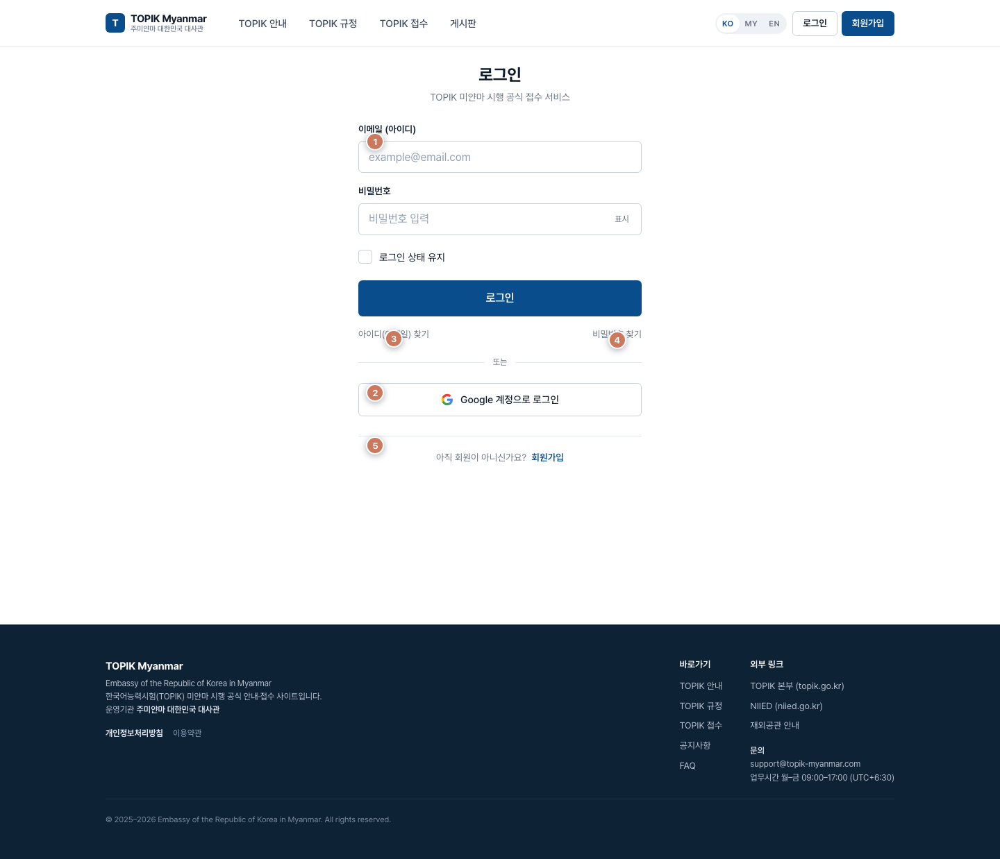
이메일+비밀번호 또는 Google 계정으로 로그인합니다. 시험 접수·마이페이지·문의 등 대부분의 기능은 로그인 후 이용합니다.
사용 흐름 (시나리오)
- 이메일+비밀번호 입력 → 로그인. 로그인 상태 유지를 체크하면 브라우저를 닫아도 로그인이 유지되며, 최대 14일까지 자동 로그인됩니다. 체크하지 않으면 탭·브라우저를 모두 닫았을 때 다시 로그인해야 합니다(공용 PC에서는 체크하지 않는 것을 권장).
- 성공 시, 로그인 전에 가려던 페이지가 있으면 그곳으로, 없으면 홈으로 이동.
- 비밀번호를 6개월 이상 변경하지 않았다면 변경 권유 안내(나중에 / 변경).
입력 필드
| 필드 | 필수 | 형식·제약 |
|---|---|---|
| 이메일 | ● | 이메일 형식(= 로그인 아이디) |
| 비밀번호 | ● | 표시/숨김 토글 제공 |
| 로그인 상태 유지 | ○ | 체크 시 브라우저를 닫아도 유지(최대 14일). 미체크 시 탭·브라우저 종료 시 재로그인 |
안내 창
| 기능 | 설명 |
|---|---|
| 아이디(이메일) 찾기 | 이름·생년월일·연락처 입력 → 가입 이메일 일부 안내. |
| 비밀번호 찾기 | 이메일로 인증코드 → 비밀번호 재설정 화면. |
| 비밀번호 변경 권고 | 6개월 이상 미변경 시 표시. 변경 → 내정보 수정. |
요소별 상세
- 1) 로그인 폼 — 이메일·비밀번호 입력 후 로그인.
- 2) Google 로그인 — Google 계정으로 로그인. 프로필 미완성 시 회원가입으로 이어질 수 있음.
- 3) 아이디 찾기 — 이름·생년월일·연락처 모두 일치 시 이메일 일부 안내.
- 4) 비밀번호 찾기 — 이메일 → 인증코드. Google 계정이면 Google 로그인 안내, 미가입이면 "가입된 계정이 없습니다."
- 5) 회원가입 링크 — 회원가입 화면으로 이동.
이메일 계정으로 6개월 이상 비밀번호를 변경하지 않았다면 로그인 성공 후 비밀번호 변경 권고 안내 창(모달)이 표시될 수 있습니다(위 「안내 창」 표 참고).
로그인 실패 시 안내
선택한 언어(KO/MY/EN)에 맞춰 아래와 같은 안내가 표시됩니다.
| 상황 | 안내 메시지 (한국어 예시) |
|---|---|
| 이메일·비밀번호 불일치 | "이메일 또는 비밀번호가 일치하지 않습니다." |
| 계정 잠금 | "로그인 실패가 누적되어 계정이 잠겼습니다." (5회 실패 시 30분) |
| 일시적 오류 | "서버를 일시적으로 사용할 수 없습니다." |
| 연결 오류 | "서버에 연결할 수 없습니다." — 잠시 후 다시 시도 |
TIP: 비밀번호를 5번 틀리면 30분간 로그인이 잠깁니다. 비밀번호 찾기로 재설정하거나, 잠금 해제까지 기다려 주세요. Google 가입 회원은 Google 로그인 버튼을 사용하세요. MY·EN으로 전환한 뒤 로그인을 시도하면 오류 문구도 해당 언어로 표시되는지 확인해 보세요.
계정 · 회원가입 (3단계)
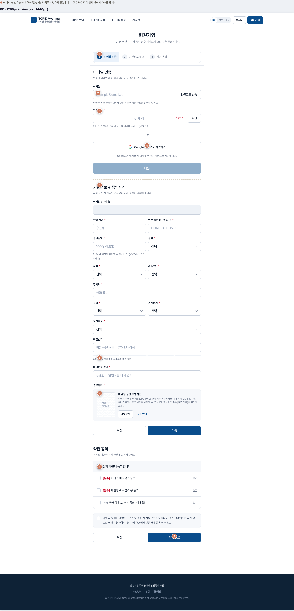
처음 이용하시는 분은 3단계 회원가입을 완료해야 시험 접수가 가능합니다. 증명사진은 가입 시 한 번 등록하면 접수·심사에 계속 사용되므로, 사진 규정과 접수 STEP3 기준에 맞는 사진을 준비해 주세요.
사용 흐름 (가입 시나리오)
- STEP1 이메일 인증 — 이메일 → 인증코드 발송 → 6자리 코드 입력(5분 유효) → 확인. 또는 Google(이메일 인증 생략). 완료 후 다음.
- STEP2 기본정보 + 증명사진 — 이름·생년월일·연락처 등 + 증명사진 업로드.
- STEP3 약관 동의 — 필수 약관 → 가입 완료 → 완료 안내 → 로그인.
단계별 화면
| 단계 | 주요 동작 |
|---|---|
| 1 | 이메일 입력 → 인증코드 발송·입력·확인, 또는 Google → 다음 |
| 2 | 프로필 입력 + 증명사진 → 다음 |
| 3 | 약관 동의 → 가입 완료 |
입력 필드 (STEP2)
| 필드 | 필수 | 형식·제약 | 예시 |
|---|---|---|---|
| 이메일(아이디) | ● | STEP1에서 인증된 값, 변경 불가 | a@b.com |
| 한글 성명 | ● | 100자 이내 | 홍길동 |
| 영문 성명 | ● | 여권 표기, 입력 시 자동 대문자 | HONG GILDONG |
| 생년월일 | ● | YYYYMMDD 8자리, 만 14세 이상 | 19960101 |
| 성별 | ● | 남 / 여 | 남 |
| 국적 | ● | 미얀마 / 대한민국 / 기타 | 미얀마 |
| 제1언어 | ● | 미얀마어 / 한국어 / 영어 / 기타 | 미얀마어 |
| 연락처 | ● | 국가번호 포함 권장 | +95 9… |
| 직업 / 응시동기 / 응시목적 | ● | 목록에서 선택 | 학생 |
| 비밀번호 / 확인 | ● | 8자 이상 + 영문·숫자·특수문자 (Google 가입 시 숨김) | — |
| 증명사진 | ● | JPG/PNG, 2MB 이하 (규격 안내 제공) | photo.jpg |
안내 창
| 기능 | 설명 |
|---|---|
| 약관 보기 | 보기 → 약관 전문 확인 |
| 가입 완료 | 로그인 또는 시험 접수로 이동 |
| 증명사진 규격 | 7개 규칙 안내 |
스크린샷 번호 (● 표시)
스크린샷에는 3단계 화면이 한 장에 펼쳐져 있으며, ● 1~9 번호가 아래 표와 같습니다.
| 번호 | 요소 | 설명 |
|---|---|---|
| 1 | 단계 표시 | ① 이메일 인증 → ② 기본정보 → ③ 약관 동의. 현재 단계가 강조 표시됩니다. |
| 2 | 이메일 + 인증코드 발송 | 이메일 입력 후 인증코드 발송. 6자리 코드가 이메일로 전송되며 5분 유효합니다. |
| 3 | 인증코드 + 타이머 | 코드 입력란과 남은 시간. 확인 → "이메일 인증 완료" 안내. |
| 4 | Google 가입 | Google 계정으로 계속하기. 이메일 인증·비밀번호 입력이 생략됩니다. |
| 5 | 프로필 입력 (STEP2) | 한글·영문 성명, 생년월일, 성별, 국적, 연락처, 직업·동기·목적 등 위 입력 표 항목 전체. |
| 6 | 비밀번호 강도 | 8자 이상·영문·숫자·특수문자 충족도 → 약함~매우 강함. Google 가입 시 이 영역은 숨겨집니다. |
| 7 | 증명사진 | 파일 선택·미리보기. JPG/PNG 2MB 이하. 규격 안내 버튼으로 7가지 규칙 확인. |
| 8 | 약관 동의 | 서비스·개인정보 필수, 마케팅 선택. 전체 동의 토글. 보기로 약관 전문 확인. |
| 9 | 가입 완료 | 가입 완료 버튼 → 완료 안내 → 로그인 또는 시험 접수로 이동. |
자주 보는 안내 메시지
| 상황 | 메시지 |
|---|---|
| 비밀번호 규칙 | "비밀번호는 8자 이상, 영문·숫자·특수문자를 포함해야 합니다." |
| 비밀번호 불일치 | "비밀번호 확인이 일치하지 않습니다." |
| 만 14세 미만 | 생년월일 필드 오류 — 가입 불가 |
| 이미 가입된 이메일 | "이미 가입된 이메일입니다." |
| 탈퇴 30일 이내 재가입 | "탈퇴 후 30일간 동일 이메일로 재가입 불가" |
| 정지 계정 | "사용이 제한된 계정입니다." |
| 인증코드 오류/만료 | "인증코드가 올바르지 않습니다." (남은 시도 횟수 표시) |
| OTP 6회 실패 | "인증코드 확인에 6회 실패했습니다. 인증코드를 다시 발송해 주세요." |
| 이메일 형식 | "올바른 이메일 형식을 입력해 주세요." |
TIP: 인증코드는 5분 유효합니다. 메일이 안 오면 스팸함을 확인하고 재발송하세요. Google 가입은 이메일 인증·비밀번호 입력이 생략됩니다.
계정 · 비밀번호 재설정
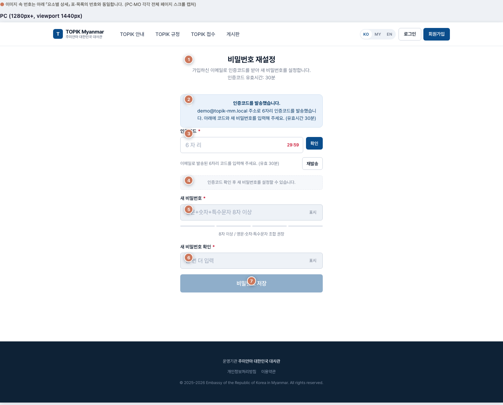
로그인 화면 비밀번호 찾기에서 이메일로 인증코드를 받은 뒤 이 페이지로 진입합니다. 스크린샷은 PC + MO 나란히, 인증코드 발송 직후 정상 화면입니다. ● 번호는 아래 표와 같습니다.
주소를 직접 입력해서 들어오면 잘못된 접근입니다 안내만 보이고 로그인 페이지로 이동합니다. 반드시 로그인 화면에서 비밀번호 찾기 → 인증코드 발송 순서로 시작하세요.
사용 흐름 (시나리오)
- 로그인 → 비밀번호 찾기 → 이메일 → 인증코드 발송 → 이 페이지.
- 발송 안내 확인 → 6자리 인증코드 → 확인 → 새 비밀번호 입력란 활성화.
- 새 비밀번호·확인 → 비밀번호 저장 → 성공 안내 → 로그인.
화면 구성 (정상 재설정 화면)
| 번호 | 요소 | 동작 |
|---|---|---|
| 1 | 제목·안내 | 비밀번호 재설정 — 이메일 인증코드로 새 비밀번호 설정. 유효 30분. |
| 2 | 발송 안내 | "인증코드를 발송했습니다." + 대상 이메일 + 코드·새 비밀번호 입력 안내. |
| 3 | 인증코드 | 6자리 입력 + 타이머(30:00부터) + 확인. 하단 재발송. |
| 4 | 잠금 안내 | 인증 전: "인증코드 확인 후 새 비밀번호를 설정할 수 있습니다." — 새 비밀번호·저장 버튼 비활성. |
| 5 | 새 비밀번호 | 인증 후 활성. 표시/숨김, 강도 표시, 8자 이상·영문·숫자·특수문자 안내. |
| 6 | 새 비밀번호 확인 | 동일 값 재입력. |
| 7 | 비밀번호 저장 | 검증 통과 시 활성 → 저장 후 성공 안내. |
잘못된 접근
| 요소 | 내용 |
|---|---|
| 안내 | 잘못된 접근입니다 — 로그인에서 이메일 입력 후 [인증코드 발송] 으로 다시 시작. |
| 버튼 | 로그인 페이지로 |
입력 필드
| 필드 | 필수 | 형식·제약 |
|---|---|---|
| 인증코드 | ● | 6자리, 유효 30분 |
| 새 비밀번호 | ● | 8자 이상 + 영문·숫자·특수문자 (인증 전 비활성) |
| 새 비밀번호 확인 | ● | 위와 동일 값 |
검증·에러
| 상황 | 메시지 |
|---|---|
| 코드 오류/만료 | "인증코드가 올바르지 않거나 만료되었습니다." |
| 재설정 실패 | "비밀번호를 변경할 수 없습니다. 다시 시도해 주세요." |
| 비번 규칙 | "영문·숫자·특수문자를 각각 포함하여 8자 이상…" |
| 현재와 동일 비번 | "새 비밀번호는 현재 비밀번호와 달라야 합니다." |
| OTP 6회 실패 | "인증코드를 다시 발송해 주세요." |
| URL 직접 접속 | "잘못된 접근입니다" 안내 |
TIP: 인증코드·재설정 링크 모두 30분 유효입니다. 시간이 지나면 로그인 화면에서 비밀번호 찾기를 처음부터 다시 진행하세요.
계정 · 내정보 수정
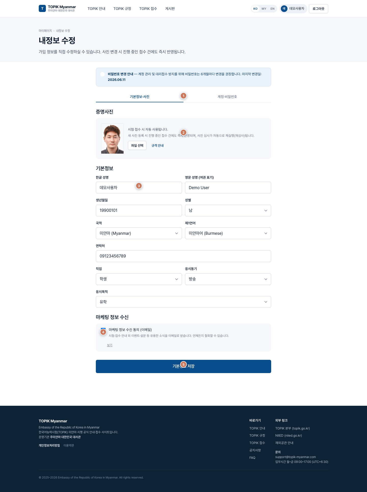
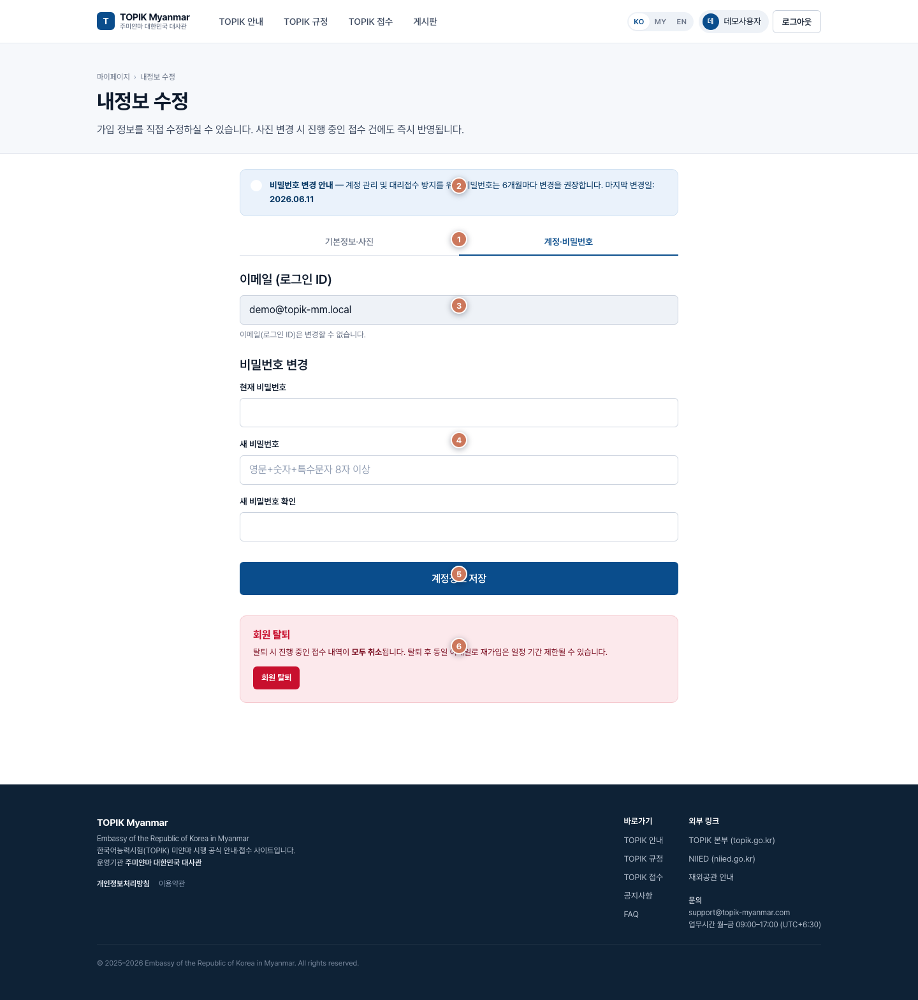
로그인 필수.
이름·연락처·증명사진·비밀번호 등을 수정하는 화면입니다. 마이페이지 프로필 카드의 내정보 수정 링크로도 들어올 수 있습니다. 사진을 바꾸면 진행 중인 접수의 사진 심사가 처음부터 다시 진행됩니다 — 시험 직전에는 신중하게 변경하세요.
탭 2개: 기본정보·사진 / 계정·비밀번호. (Google 계정은 비밀번호 탭 숨김 + Google 안내)
사용 흐름 (시나리오)
- 기본정보·사진 — 수정 후 기본정보 저장. 사진 변경 시 진행 중 접수에 즉시 반영, 사진 심사 자동 재실행.
- 계정·비밀번호 — 현재/새 비밀번호 저장 → 보안상 재로그인 안내. 하단 회원 탈퇴.
입력 필드 (기본정보)
| 필드 | 필수 | 형식·제약 |
|---|---|---|
| 한글/영문 성명 | ● | 영문은 여권 표기 |
| 생년월일 | ● | YYYYMMDD, 만 14세 이상 |
| 성별/국적/제1언어 | ● | 목록 선택 |
| 연락처 | ● | — |
| 직업/응시동기/응시목적 | ● | 목록 선택 |
| 마케팅 정보 수신(이메일) | ○ | 체크박스 on/off, 기본정보 저장 시 반영 |
| 증명사진 | ○ | JPG/PNG 2MB 이하, 변경 시 진행 중 접수 재심사 |
비밀번호 변경 필드
| 필드 | 필수 | 형식·제약 |
|---|---|---|
| 현재 비밀번호 | ● | 일치해야 함 |
| 새 비밀번호 / 확인 | ● | 8자 이상 + 영문·숫자·특수문자 각 1자, 현재 비밀번호와 달라야 함 |
요소별 상세 (기본정보·사진)
- 1) 탭 — 기본정보·사진 / 계정·비밀번호 전환.
- 2) 사진 교체 — 미리보기, 저장 시 진행 중 접수 사진 심사 대기로 재설정. 사진만 실패 시 "기본정보는 저장됐지만 사진 업로드 실패" 안내.
- 3) 프로필 폼 — 기본정보 입력 필드. 기본정보 저장 → 반영, 상단 메뉴 이름도 변경.
- 4) 마케팅 수신 동의 — 기본정보 탭 하단 마케팅 정보 수신 동의(이메일) 체크박스. 가입 시 선택 여부가 기본값으로 표시되며, 기본정보 저장으로 변경·철회 가능. 보기 버튼은 화면 위 레이어 팝업으로 약관 전문을 불러옵니다(새 창 아님).
- 5) 기본정보 저장 — 기본정보·사진·마케팅 수신 설정을 한 번에 저장합니다.
요소별 상세 (계정·비밀번호)
- 1) 탭 — 기본정보·사진 / 계정·비밀번호 전환.
- 2) 마지막 변경일 — 비밀번호 마지막 변경일(6개월마다 변경 권장 안내). Google 가입 계정에는 Google 안내가 대신 표시됩니다.
- 3) 이메일 (로그인 ID) — 가입 이메일 표시. 변경 불가.
- 4) 비밀번호 변경 — 이메일 가입 계정만. Google 가입은 Google에서 관리. 변경 후 재로그인.
- 5) 계정정보 저장 — 비밀번호 변경 내용을 저장합니다.
- 6) 회원 탈퇴 — 이메일 계정: 비밀번호 확인. Google 계정: Google 본인 확인. 탈퇴 시 진행 중 접수 전부 취소, 동일 이메일 30일 재가입 제한.
검증·에러
| 상황 | 메시지 |
|---|---|
| 현재 비번 불일치 | "현재 비밀번호가 올바르지 않습니다." |
| Google 비번 변경 시도 | "Google 계정은 비밀번호 변경을 사용할 수 없습니다." |
| 만 14세 미만 생일 | "만 14세 이상만 가입할 수 있습니다." |
| Google 인증 만료 | "Google 인증이 만료되었습니다. 다시 시도해 주세요." |
TIP: 회원 탈퇴 시 진행 중인 모든 접수가 취소되며, 같은 이메일로 30일간 재가입할 수 없습니다. 탈퇴 전 접수 확인에서 진행 중 접수가 없는지 확인하세요.
약관 · 이용약관
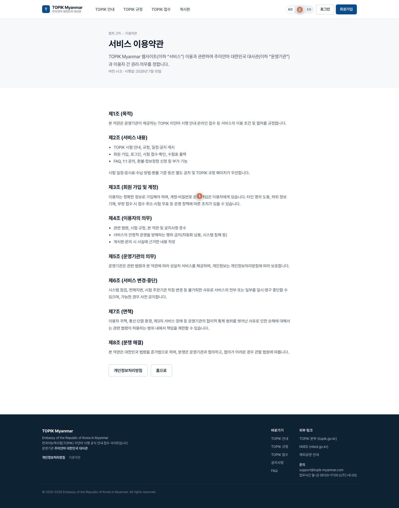
TOPIK Myanmar 서비스 이용약관 전문입니다. 회원가입 시 필수 동의 항목이며, 하단에 버전·시행일이 표시됩니다. 약관이 개정되면 공지 후 새 버전이 적용될 수 있습니다 — 중요 변경은 공지사항도 함께 확인하세요.
| 번호 | 요소 | 동작 |
|---|---|---|
| 1 | 약관 본문 | 이용약관 전문과 버전·시행일. 스크롤하여 전체를 읽을 수 있습니다. |
| 2 | 언어 전환 | KO/MY/EN 변경 시 해당 언어 약관을 다시 불러옵니다. |
약관 · 개인정보처리방침
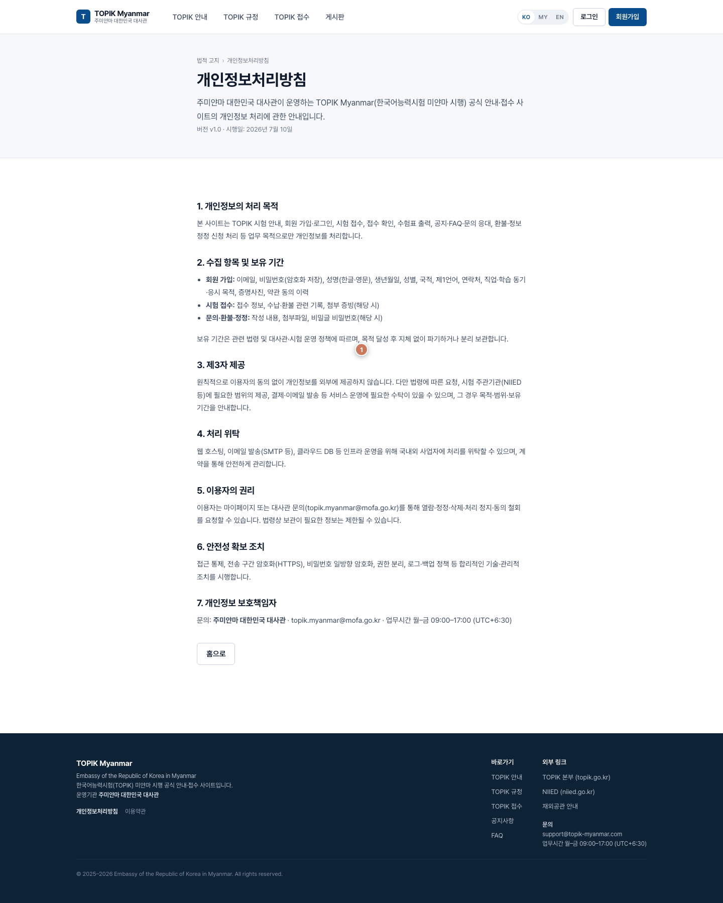
개인정보 수집·이용·보관·파기 등에 관한 처리방침 전문입니다. 회원가입 시 필수 동의 합니다. 이용약관과 같이 KO / MY / EN을 지원하며, 푸터·가입 화면 「보기」 링크로도 열립니다.
| 번호 | 요소 | 동작 |
|---|---|---|
| 1 | 개인정보 본문 | 개인정보처리방침 전문. 문의처·보호책임자 등이 포함될 수 있습니다. |
약관 · 마케팅 수신
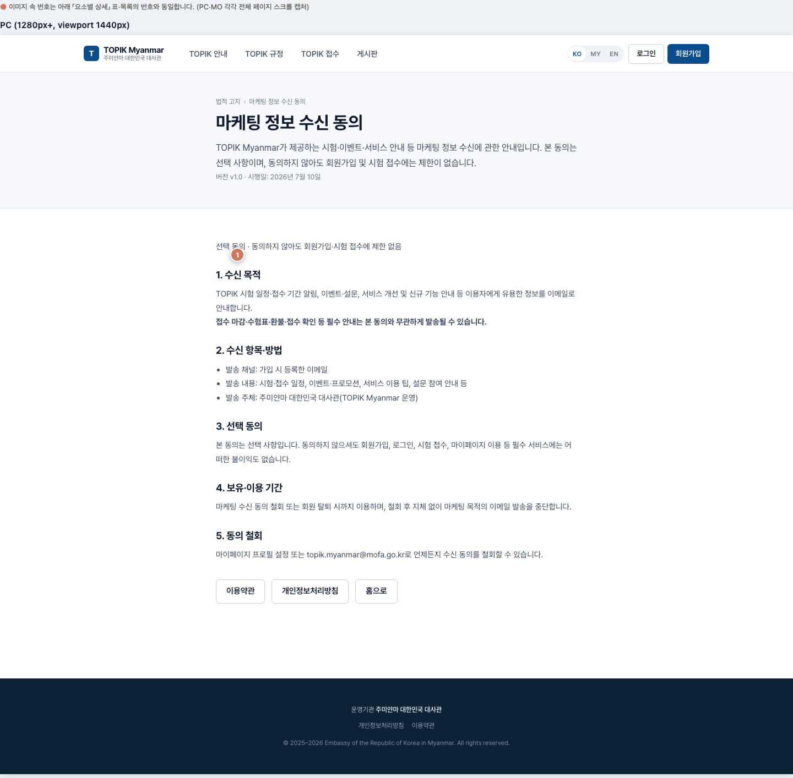
마케팅 정보 수신 동의 약관 전문입니다. 회원가입 시 선택 항목이며, 동의하지 않아도 시험 접수·필수 서비스 이용에는 영향이 없습니다. 동의한 경우 공지·시험 안내 이메일을 받을 수 있습니다. 내정보 수정 기본정보 탭에서 체크박스로 수신 여부를 바꿀 수 있으며, 보기는 가입 화면과 같이 레이어 팝업으로 약관을 확인합니다. 이 독립 페이지(푸터 링크)는 약관 전문을 스크롤하여 읽는 용도입니다.
| 번호 | 요소 | 동작 |
|---|---|---|
| 1 | 마케팅 약관 | 마케팅 정보 수신 동의 관련 약관 전문. |
에러 · 404

존재하지 않거나 삭제된 주소로 접속했을 때 보이는 안내 화면입니다. 북마크·공유 링크가 오래되었거나 주소를 잘못 입력한 경우에 나타납니다. 상단 메뉴·푸터는 다른 페이지와 같아서, 메뉴로 원하는 화면으로 이동할 수 있습니다.
| 번호 | 요소 | 동작 |
|---|---|---|
| 1 | 안내 문구 | "요청하신 페이지를 찾을 수 없습니다" + 짧은 설명. |
| 2 | 이동 버튼 | 홈으로 — 메인 홈 이동 / 접수 방법 — 접수 방법 안내. |
TIP: 로그인·접수 중 갑자기 404가 나오면 주소창 URL이 잘렸는지 확인하고, 홈에서 다시 메뉴를 이용하세요.
부록: 자주 묻는 상황과 대처
| 상황 | 확인할 곳 | 대처 |
|---|---|---|
| 접수 다음 버튼이 비활성 | 시험 접수 STEP3 | 사진 규격 5개 체크 모두 선택 |
| 접수 후 아무 일도 안 일어나는 것 같음 | 접수 확인 | 사진 심사 대기 → 운영진 처리 대기, 수납 대기 → 수납처 방문 |
| 사진 반려 | 마이페이지 사유보기 | 내정보 수정에서 사진 교체 |
| 수납 후에도 수납 대기 | 마이페이지 | 수납처·접수번호 확인, 문의게시판 |
| 수험번호 안 보임 | 마이페이지·수험표 | 공개 일시 전일 수 있음, 공지 확인 |
| 환불 필요 | 응시료 규정 | 환불·정보정정 신청 |
| 로그인 안 됨 | 로그인 | 비번 확인·5회 잠금·Google 가입 여부 |
| 비밀번호 분실 | 비밀번호 재설정 | 로그인 화면 비밀번호 찾기부터 |
문의: 푸터 업무시간(월–금 09:00–17:00, 미얀마 시간) 내 문의게시판 또는 공지에 안내된 이메일을 이용하세요. FAQ에서 먼저 검색하면 더 빠릅니다.